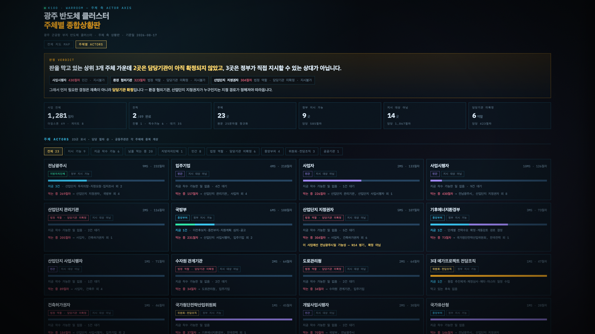

제도100 — AI로 그린 대한민국 제도 지도 586개.
그리고 그 지도로 세어 본, 반도체 클러스터 행정절차 1,281개.
원래 하면 안 되는 일을, 행정청이 "해도 된다"고 풀어주는 것.
원래 해도 되는 일을, "한다"고 알리는 것.
어떤 신고는 행정청이 '수리'해야 효력이 생깁니다. 행정법을 공부하기 전까지는 알기 어렵습니다.
직제 · 처분 · 협의 · 통보 · 시달 — 하나하나는 한국어인데,
조합되는 순간 외국어가 됩니다.
행정 밖의 사람이 읽으면, 아무것도 남지 않습니다.
편람을 다 읽어도 — 어디서 시작해서, 어느 기관을 거치고, 돈은 어디서 나와서,
마지막에 국민한테 뭐가 도착하는지 — 전체 그림은 잘 안 그려집니다.
그 그림은 보통 전임자 머릿속에 있고,
전임자는 이미 다른 부서에 가 있습니다.
행정 리터러시 → 법령→구조도 → 제도 586 → 반도체 1,281 → AX 실사례 3건 → 우수사례 심층분석 (실데이터 · 3분 10초 · 해설 음성 + 배경음악)
100개 제도의 법령을 사람이 읽고 그림으로 옮기려면 몇 달이 걸립니다.
AI 덕분에, 행정직 공무원 한 명이 퇴근 후에 해볼 만한 일이 됐습니다.
이 지도가 있으면 — 어떤 정책이든,
착공까지 절차 전체를 셀 수 있습니다.
착공까지 절차가 몇 개인지, 즉답할 수 있는 기관은 없었습니다.
정책상 입지 결정 — 산업단지 지정도, 착공 승인도 아직 아닙니다.
공식 발표 · 법령 · 고시만 근거로, 착공·가동까지의 절차를 전부 셌습니다.
실물 화면 — 전경 포스터 → 전체표 1,281행 → 주체별 종합상황판 (공개 웹 녹화 · 45초 · 무음)
※ 법정기한과 절차군 실측 중앙값을 역일로 단순환산한 모의 수치 — 착수 지연·재협의 루프는 미반영.
규칙 조합 16가지를 모두 바꿔도 기간 폭은 거의 변하지 않습니다. 개별 규제가 아니라 구조의 문제라는 뜻입니다.

광주 반도체 클러스터 주체별 종합상황판 — 49개 마일스톤의 오늘 상태, 23개 주체가 각각 무엇에 막혀 있는지, 지금 착수 가능한 일 6건. 공개 웹에서 누구나 볼 수 있습니다.
국가 대형 프로젝트마다,
착공까지의 절차 전체를 먼저 세어놓고
시작하게 해주십시오.
3대 메가프로젝트 나머지와 5극 3특으로 같은 실측을 확장하겠습니다.
행정을 국민의 언어로 — AI로 행정 리터러시를 높이는 일, 계속하겠습니다.